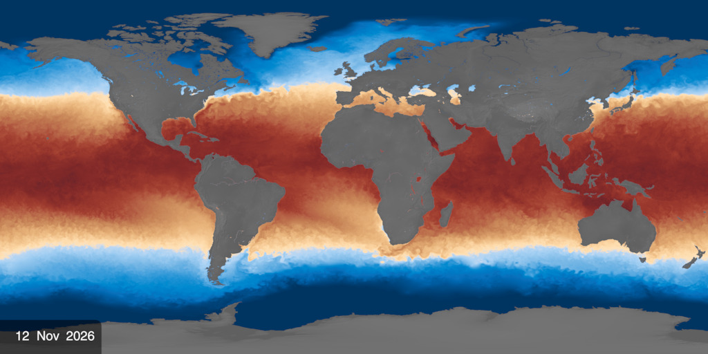

An Earth observation jukebox
Hear the unseen.
Follow Saharan dust across continents, or listen inside a Brazilian forest. Start with a NASA signal and uncover the evidence yourself.
Follow the Saharan dust signal
Listen for the strongest region, test your answer against the NASA model, then see how the pattern changes across selected dates.
Explore Earth
Sound Atlas
Sample the Sound Atlas

Sonic Lens
Loading measurements…
EARTHPULSE · Team Vanguard
Science & credits
Listen to derived signals from traceable NASA science. Each experience identifies its source, scientific time, units and sound mapping. Map legends and structured evidence also support silent exploration.
Visual context: NASA Scientific Visualization Studio. Forest landscape: AI-generated illustration. Implementation assisted by Codex.
NASA Earth Information Center gallery ↗